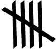

A visualization of sound as a measure of engagement.
So here's the story:
I went to the University of Iowa Obermann Center working symposium Designing the Digital Future and it was pretty awe inspiring.
I was surrounded by many great thinkers doing some great things.
The symposium was kicked off by Celine Latulipe from the Human Computer Interaction Lab at UNC Charlotte. While I really enjoyed the talk, one of interesting asides was related to her work on Sound Interaction.
When she started the talk, she opened up what I'll call a sound-reactive canvas. As the audience made noise by asking questions, laughing, clapping, or otherwise sharing their engagement audibly, the application painted dots across the screen. At the end of her talk she showed us what our engagement over the talk looked like.
This small, but significant, part of the symposium was something that I latched onto and decided to work with.
This is what I ended up with:
These are visualizations captured while we watched "Heartless" the 8th episode of Sleepy Hollow season 2.
But this wounldn't be a technical post without a discussion of how I got there.
You can skip ahead by visiting the SoundCanvas and playing with the demo.
You can also play with the code by forking this github project or play with the jsfiddle in your browser.
First step
The first step is actually deciding to do things, so I'll share one quick thing. I wanted to do, and did, most of this work with my 10 year old daughter helping me explore code and even taking over the keyboard a couple of times. We explored artistic sensibilities of the project together too.
Finding a place to start
I wanted to take advantage of some of the things I've done recently with D3, but I couldn't really justify using svg and the full d3 framework when I thought I might be able to do this in a simpler way. With Amazon's Echo just out, we had been playing with google now in chrome earlier in the day, so I know we could take advantage of browser microphone input. I just didn't know how.
We did some exploring and eventually found an example of how to use the microphone input on Web Apprentice.
It is a pretty good explanation of the code necessary to request access to the microphone and start using the input.
Take a minute to visit that site, check out the code and come back here when you are ready.
Here is some of the code we changed:
function drawTimeDomain() {
var minValue = 9999999;
var maxValue = 0;
for (var i = 0; i < amplitudeArray.length; i++) {
var value = amplitudeArray[i] / 256;
if(value > maxValue) {
maxValue = value;
} else if(value < minValue) {
minValue = value;
}
}
var y_lo = canvasHeight - (canvasHeight * minValue) - 1;
var y_hi = canvasHeight - (canvasHeight * maxValue) - 1;
ctx.fillStyle = '#ffffff';
ctx.fillRect(column,y_lo, 1, y_hi - y_lo);
// loop around the canvas when we reach the end
column += 1;
if(column >= canvasWidth) {
column = 0;
clearCanvas();
}
}
What it does on the Web Apprentice tutorial is draw thin lines from the maximum amplitude (y_hi) to the minimum amplitude (y_lo) scaled to the output canvas for each time slice of the microphone input resulting in a pretty standard looking waveform analysis. Pretty slick.
But we want circles!
Here is our version of the same method.
function drawTimeDomain() {
ctx.fillStyle = config.randomColor();
var centerX = column + config.wobble();
var centerY = row + config.wobble();
var radius = config.radiusFromAmplitudeArray(amplitudeArray);
//draw a circle on the canvas grid including the wobble
ctx.beginPath();
ctx.arc(centerX, centerY, radius, 0, 2 * Math.PI, false);
ctx.fill();
// loop around the canvas when we reach the end
column += config.gridStep;
if (column >= config.canvasWidth) {
column = 30;
row += config.gridStep;
if (row >= config.canvasHeight) {
if (config.addScaled)
redraw();
column = redrawColumn;
row = redrawRow;
}
}
}
You'll notice that it is quite a bit different, so we'll go through a couple of lines of code.
ctx.fillStyle = config.randomColor();
This generates a random color by using the power of the internets and a config object setup at the top of the code which defines randomColor as:
randomColor: function () {
return '#' + Math.floor(Math.random() * 16777215).toString(16);
}
Go read the post linked above for an explanation.
We continue to define the position for the center of the circles based on a loop around a grid of the canvas that sets the column and row to position the next circle. If we left it at that, we would end up with perfectly overlapping centers for circles. Here comes the artistry that is defined in the config object as:
wobble: function () {
return Math.floor(Math.random() * config.wobbleFactor) - Math.floor(config.wobbleFactor / 2);
}
Randomness for the win! We subtract half of the wobble factor to allow for negative numbers. This allows the center of the circle to move up and down, left or right of the grid position on the canvas.
The wobbleFactor is just a number. We set it to 50 after playing with it for a while.
What about the size of the circles you ask?
The code:
var radius = config.radiusFromAmplitudeArray(amplitudeArray);
Takes care of that, so, don't worry about it.
I worry about the size enough for all of us.
This was actually one of the harder parts. Initially my daughter and I just used a simple formula for the radius which used the y_hi and scaled it to fit. It was simple, elegant even.... And then, true confessions of a dead-beat dad, I broke it by trying to make it better. I hadn't kicked up git yet, so I was out of luck to put it back. So I had to re-engineer it. I'm trying to live that one down.
radiusFromAmplitudeArray: function (amplitudeArray) {
var max = 0;
var min = 99999;
for (var i = 0; i < amplitudeArray.length; i++) {
max = max < amplitudeArray[i] ? amplitudeArray[i] : max;
min = min > amplitudeArray[i] ? amplitudeArray[i] : min;
}
var diff = Math.abs(max - min);
var radius = config.scaleRadius(diff);
//console.log ("min: " + min + " max: " + max + " diff: " + diff + " radius: " + radius);
return Math.abs(radius);
}
Similar to the original code we get the max and the min for the amplitude. We don't scale it by dividing by 256 like the original code. We get the difference between the two and then we scale it using Math. Notice the capital M. It is important. ScaleRadius is defined as:
scaler: function () {
return config.circleRange() / config.amplitudeRange();
},
scaleRadius: function (r) {
return config.scaler() * (r - config.amplitudeMin) + config.circleMin;
}
The circleRange is the difference between the maximum and minimum circle size we want and the amplitudeRange is the minumum and maximum range we expect to get.
If you want to know how that formula works, we found a good Math StackOverflow. Think back to how you learned to scale temperature scales of Celsius and Fahrenheit. Same thing.
A final note
I like working with my daughter on coding projects. We've done a few together for a few years now. One thing we like to do is to take all the numbers in a piece of unfamiliar code and tinker with them so we can identify what they do when we run the code again. We extend that to web colors too. Once we figure them out we create variables for them and move them up to a central portion of the code. Recently, I've started making config objects to hold the variables so you'll see that in our version of the code. It also happens to make the code easier to tinker with again.
Here is the complete config object for this piece of code:
var config = {
sampleSize: 4096 * .25, // number of samples to collect before analyzing
// decreasing this gives a faster sonogram, increasing it slows it down
gridStep: 50, // canvas grid x and y steps
canvasWidth: 1000, // needs to be in lockstep with css value at the time the canvas object is created
canvasHeight: 700, // otherwise the circles are scaled strangely
wobbleFactor: 50, // moves the center of the circles within a random orbit around the grid points of the canvas
circleMax: 100, // maximum size of a circle
circleMin: 1, // minimum size of a circle
amplitudeMax: 300, // what the maximum amplitude might be
amplitudeMin: 0.0, // what the minimum amplitude might be
transparency: 0.75, // the transparency of the circles
addScaled: false, // copy the scaled image to the top corner for each cycle.
// functions to calculate various things below including the wobble of the positioning of the circles,
// the radius of the circles
// and the color of the circles.
wobble: function () {
return Math.floor(Math.random() * config.wobbleFactor) - Math.floor(config.wobbleFactor / 2);
},
amplitudeRange: function () {
return config.amplitudeMax - config.amplitudeMin;
},
circleRange: function () {
return config.circleMax - config.circleMin;
},
scaler: function () {
return config.circleRange() / config.amplitudeRange();
},
radiusFromAmplitudeArray: function (amplitudeArray) {
var max = 0;
var min = 99999;
for (var i = 0; i < amplitudeArray.length; i++) {
max = max < amplitudeArray[i] ? amplitudeArray[i] : max;
min = min > amplitudeArray[i] ? amplitudeArray[i] : min;
}
var diff = Math.abs(max - min);
var radius = config.scaleRadius(diff);
//console.log ("min: " + min + " max: " + max + " diff: " + diff + " radius: " + radius);
return Math.abs(radius);
},
scaleRadius: function (r) {
return config.scaler() * (r - config.amplitudeMin) + config.circleMin;
},
randomColor: function () {
return '#' + Math.floor(Math.random() * 16777215).toString(16);
}
}
It isn't the prettiest piece of code, but it gets the job done.
Have fun with this. Star the github repo if you had fun.
Wait, where do I go from here?
You read all the way to the end? You get to follow the same links as those folks who cheated, but you get extra points!
You can visitthe SoundCanvas and playing with the demos.
You can also play with the code by forking this github project or play with the jsfiddle in your browser.